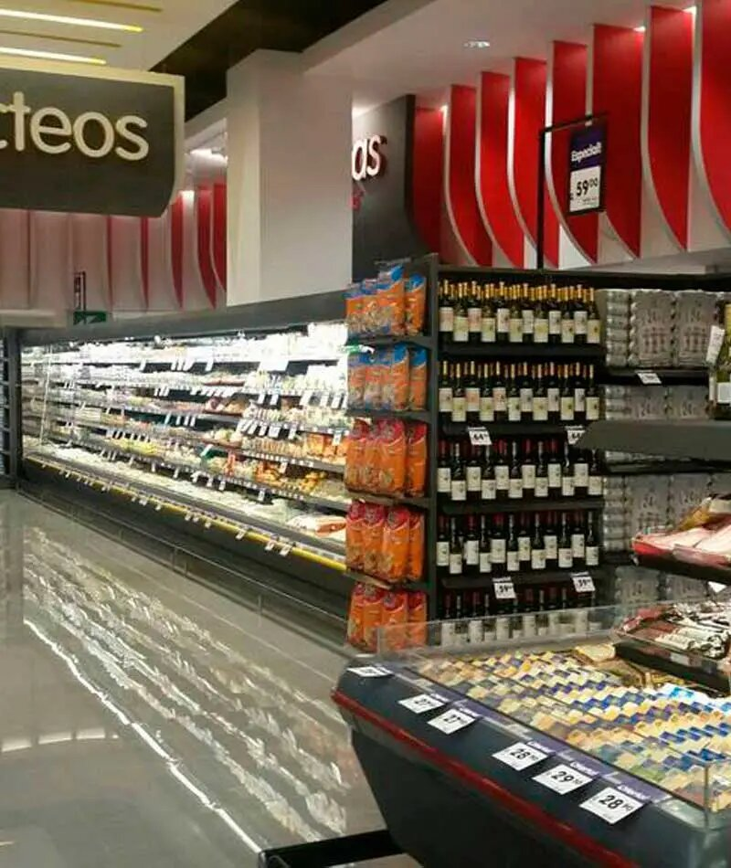

Visión de supermecado yemi:
“Ser el supermercado de referencia en calidad, innovación y sostenibilidad, transformando la experiencia de compra en una aventura gratificante para nuestros clientes. Nos comprometemos a ofrecer productos frescos, locales y responsables, promoviendo un estilo de vida saludable y apoyando a nuestras comunidades. A través de la excelencia en el servicio, la tecnología avanzada y la integración de prácticas eco-amigables, aspiramos a ser el líder en el sector de supermercados, marcando la diferencia en cada tienda que operamos.”
